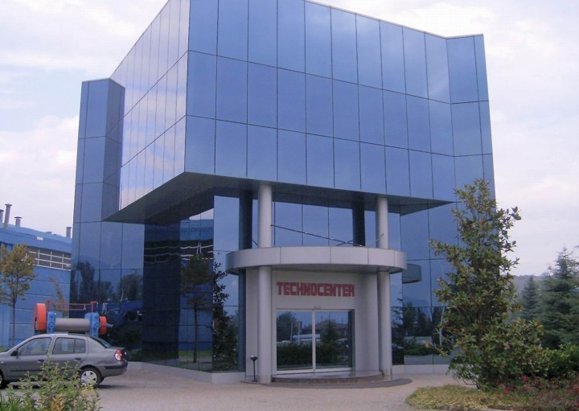
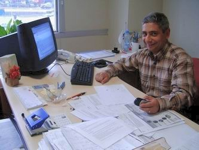
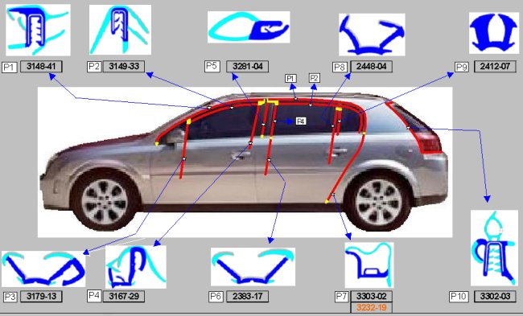
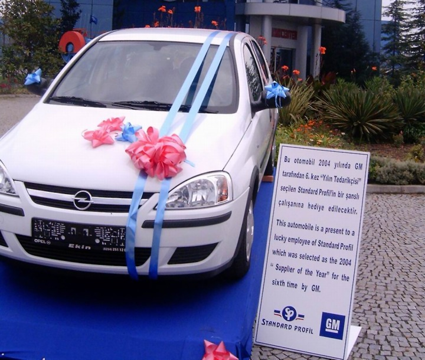

|
Röportaj:
Müfit Çaðlayan, Ürün Geliþtirme Md.
Okan Kýzýl , Ürün Geliþtirme Md. Yard.
Dr. Tuncay Yüksel, FEA Uygulama Sorumlusu
Standard Profil A.Þ.
Düzce, Eylül 2005
Not: Ýlk defa TurkCADCAM.net
Dergisi Ocak-Þubat 2006 Sayýsýnda yer almýþ bu yazý,
ek resimlerle birlikte Aðustos 2008'de TurkCADCAM.net portalýndan yayýnlanmaya baþlamýþtýr.
Giriþ:
Standard Profil A.Þ., General Motors, Ford, Volkswagen, Audi ve Fiat gibi firmalar için sýzdýrmazlýk fitili tasarýmý, geliþtirmesiyle birlikte seri imalatýný da üstlenmektedir.

Standard Profil A.Þ., Ürün geliþtirmenin tüm aþamalarýnda CAD/CAM/CAE ve 3D optik tarama teknolojilerini baþarýlý ve etkin þekilde kullanmaktadýr.
Standard Profil A.Þ., ileri teknolojisi sayesinde tekli ya da çoklu sertlikte - kauçuktan ya da PVC - TPV - TPE'den mamul sýzdýrmazlýk fitillerini, sac, alüminyum, paslanmaz çelik, tel takviye ve floklu olarak üretmektedir. Standard Profil A.Þ., 2004 yýlýndaki kalite, fiyat, teknoloji ve servisteki performansýndan dolayý, GM tarafýndan Dünya çapýnda 78 yan sanayi firmasýna verilen "Yýlýn Tedarikçisi" ödülüne 6. kez layýk görülmüþtür. Ayrýca, Standard Profil A.Þ., bu 78 kuruluþ arasýnda yer almaya hak kazanmýþ tek Türk firmasý konumundadýr.
Þirket yetkilileriyle Standard Profil'in bu noktaya geliþini, baþarýsýnýn arkasýnda yatan teknolojileri konuþtuk...

Müfit Çaðlayan, Ürün
Geliþtirme Md. |
Müfit bey, öncelikle kendinizden bahseder misiniz?
Müfit Çaðlayan: 1987 yýlýnda Orta Doðu Teknik Üniversitesi Makine Mühendisliði Bölümü'nden mezun oldum. Ýlk iþim savunma sanayi sektöründe oldu. Ýnge ve FMC-Nurol'da 7 yýl çalýþtým. Ardýndan farklý bir sektöre geçmek istedim ve 1994 yýlýnda Eczacýbaþý Vitra'da CAD/CAM baþ mühendisi olarak göreve baþladým. Daha önce elle modelciler tarafýndan yaklaþýk 3-4 ayda hazýrlanan kalýplarý bir hafta gibi bir sürede CAD/CAM ile yapmayý baþardýk.
Hangi programlarý kullandýnýz?
Müfit Çaðlayan: Unigraphics kullanmaya baþladýk. Bir süre sonra bize ek bazý yüzey modelleme fonksiyonlar gerekli oldu. Özellikle estetik çalýþmalarda ve tasarýmcýlarýn alçý model üzerinde elle yaptýðý katkýlarý Unigraphics'de tekrarlamakta zorlandýk. Alternatif bir yazýlým için benchmark yaptýk; Yurtdýþýnda seramik sektöründe CAD/CAM kullanan firmalarý ziyaret ettik. Euclid'in bize fayda saðlayabileceðini düþündük ve Euclid de aldýk.
Daha sonra UG'deki yüzey fonksiyonlarýnýn artmasý nedeniyle Euclid atýl kaldý. Zaten bir süre sonra Euclid tamamen CATIA tarafýndan satýn alýndý. Ondan sonra UG'de sürdürdük bütün bu çalýþmalarý.
O zaman, bir tane 5 eksen bir tane de 3 eksen CNC freze tezgahýmýz ve 3 tane iþ istasyonumuzla verimli bir þekilde lavabo, klozet gibi seramik ürünlerin kalýplarýný yaptýk. Bunu yaparken özellikle seramikteki çekme payý ve aþýrý deformasyonu hesaplayabilmek için çeþitli çalýþmalar yaptýk. Belli bir sisteme oturtmaya çalýþtýk. Þöyle ki, bir lavaboyu modellerken, doküman hazýrlayarak iþe hangi kýsmýndan baþlanýr, hangi aþamalarla modellenir, bunlarý iþler hale getirdik...
Daha sonra nerelerde çalýþtýnýz?
Müfit Çaðlayan: Eczacýbaþý'ndan sonra LECTRA Türkiye servis müdürü olarak çalýþtým. CAD/CAM'den yine kopmadýk. Ama bu sefer tekstil sektöründe, daha doðrusu konfeksiyon sektöründe CNC kesim makinesi, pastal hazýrlama konularýnda faaliyet gösterdik. Yine CAD/CAM üzerine çalýþtýk ama daha çok servis aðýrlýklý olarak geliþtirme çünkü Fransa'daki ana firmamýz tarafýndan yapýlýyordu. Ayakkabý tasarým programýyla da çalýþmalar oldu. Ancak benim çalýþtýðým dönemde onula ciddi bir müþteri kitlesi oluþmadý.
Daha sonra kýsa bir süre týp sektöründe çalýþma yaptým. Hastanede, yoðun bakým gibi birimlerin kurulumunda çalýþtým.
5 yýldýr da Standard Profil'de çalýþýyorum. Proje Yönetmeni olarak baþladým, daha sonra Ürün Geliþtirme Müdür Yardýmcýsý ve Ürün Geliþtirme Müdürü olarak çalýþmamý sürdürüyorum.

Opel Vectra modeli için Standard Profil A.Þ. tarafýndan geliþtirilen farklý profil tasarýmlarý
Ürün geliþtirmede CAD/CAM sistemlerini ne þekilde kullanýyorsunuz?
Müfit Çaðlayan: CAD/CAM bizim için vazgeçilmez bir unsur diyebiliriz. Çünkü tüm otomotiv firmalarý bir CAD sistemiyle çalýþýr. Biz de onlara paralel olarak; Renault, Volkswagen ile çalýþtýðýmýz zaman CATIA, General Motors ve OPEL'le çalýþtýðýmýz zaman Unigraphics, Ford'la çalýþtýðýmýz zaman I-deas, kendimize ait bir takým kesim makineleri ve ekipmanlarýn tasarýmýnda (lisans maliyeti ucuz olduðu için) Mechanical Desktop, kalýphanede kalýp iþlemek için Cimatron... Yani bunlarýn hepsini de kullanýyoruz fabrikamýzda.
Bizde tasarým çok farklý ve zevkli bir iþ. Daha piyasaya çýkmamýþ araçlarý yýllar önceden görebiliyorsunuz. Prototiplerini görüyorsunuz onlarýn üzerinde çalýþýyorsunuz. Ortaya bir çözüm çýkarýyorsunuz. Çalýþmalarýn bir kýsmý "clay model" dediðimiz kil modelden baþlýyor. Bir kýsmý araç prototipinin bir bölümü hazýrlanmýþ durumdayken baþlýyor. Genellikle kasa datasý hazýrlanýrken biz üzerine sýzdýrmazlýk fitillerinin tasarýmlarýný yapýyoruz. Burada kasa ile ilgili bizim düzeltilmesini istediðimiz ve sýzdýrmazlýk fitillerin uyumu açýsýndan eklenmesi istediðimiz girintiler, çýkýntýlar, delikler ve boþaltmalar varsa bunlarý o safhada firmaya söylüyoruz ve firma da gerekli önlemleri alýyor.
Tabii burada bizim özellikle yapmamýz gereken iþ benchmark; Benzer araçlardaki fitilleri sürekli izliyoruz; Fuarlara gidiyoruz. Ne çözümler üretilmiþ? Fitilleri inceliyoruz. Çözülen sorunlarý inceliyoruz. Yani piyasayý yakýndan takip ediyoruz. Etmek de zorundayýz.
Belki fitiller bir otomobilin ilk bakýþta hiç de dikkat çekici bir parçasý deðil ama fitillerdeki bir kalite problemi aracýn su almasýna sebep olabileceði gibi müþteriyi rahatsýz edecek gürültü izolasyon sorunlarý da çýkarabilir. Bu da müþterinin otomobiline olumsuz not vermesi için yeterli olabilir. Bizim burada sýkça kullandýðýmýz bir söz var; "Sýzdýrmazlýk Fitilleri bir otomobili vezir de, rezil de eder".
Dün yetkililer buradaydý, 6. kez General Motors'un "Supplier of the Year" ödülünü aldýk. Bu, bizim sektörde þimdiye kadar hiçbir firmaya arka arkaya verilmemiþ bir ödül.

Firmanýn ödüle layýk görülmesi sebebiyle bir çalýþanýna
hediye edilecek otomobil giriþte sergilenmekteydi.
Firma bünyesinde birçok CAD/CAM/CAE yazýlýmý bir arada kullanýlmaktadýr:
Firmada
kullanýlan CAD/CAM/CAE Sistemleri (Toplam 21 Ýþ Ýstasyonu)
- 8
x Autodesk Mechanical Desktop
- 3
x CATIA
- 1
x I-deas
- 3 x Unigraphics
- 2
x Cimatron (kalýp tasarýmý ve CAM iþlemleri)
- 2
x GOelan (EDM, tel erozyon yazýlýmý)
- 1
x MSC / MARC sonlu elemanlar analiz (FEA) yazýlýmý
- 1
x GOM / ATOS II SO 3D optik tarama cihazý
CAM
Sistemi (Cimatron):
- 3
Eksen CNC Frezeleme
- Ø
0.6 mm Frezeleme
- Eþ
Zamanlý Kesiþim Simülasyonu
- Çabuk
Yüzey Karþýlaþtýrma
- Yüksek
Hýzlý Ýþleme
CNC tezgahlar:
- MAZAK
FJV 200, 3.5 Eksen Ýþleme
- Milltronics,
3.5 Eksen Ýþleme
- Tel
erozyon tazgahý
|